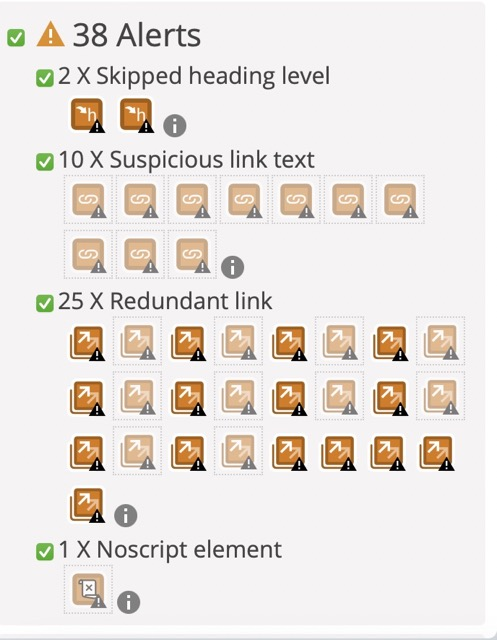

I have chosen to analyse the website that is closest to my subject: Let toys be toys
As you can see, the site does not perform very well. There are many errors and the contrast is not considered important, which could prevent people with poor vision from using it.
In addition, there are 38 alerts, 25 of which concern a redundant link. However, when you analyse where the link goes, it's quite understandable that it's redundant as it generally goes to the site's blog.
According to this analysis site, the correct ratio should be 8.59. When I place the link for my website, I get an error page. So I relied on Wave's analysis.The score for my site is 3.89, which is quite low. I've also been able to see where the contrast problems are, particularly around the buttons.
The results are in line with my analysis in Week 5. In other words, the site is fairly easy to understand. However, as you can see below, some of the results are contradictory, even though the general opinion remains the same: the site doesn't use overly complex language.
I found the explanations given in the text "how to add subtitles and caption to a video ?" very interesting. As I said earlier, I generally use Lumafusion for editing and when I need to create subtitles I use the technique in this video: Youtube Video about Lumafusion It takes much longer than the options given in the text. What's more, I really like the features in Audiate.
Unfortunately, sometimes the subtitles don't appear despite my following the instructions. So here's a screen of my mountain bike folder to see where my mistake is.
The goal here is to create the most inclusive website, it's why I think to be focus on this point.
It's why I choose to use yellow for my background color.
To increase the contrast between the titles, which I don't find strong enough, I have 2 hypotheses for creating this difference. The first is to change the CSS with the titles. The second is to import my titles from the Canva application, as shown in the example below.
For the moment, I've been concentrating on improving my CSS code, so here's a before-and-after of the changes I've made.
| Before | After |
|---|---|
Finally, I was not convince by the yellow background, it's why a choose another one who can also match the colours of the videos I've chosen.
I also carried out the Wave test with my website in order to find other areas for improvement. The most common criticism was that many of my images had similar alternative texts. So I'm going to change that when the person is unable to load the images available.
This will allow people with hearing impairments or those who do not have the ability to listen to understand the video.